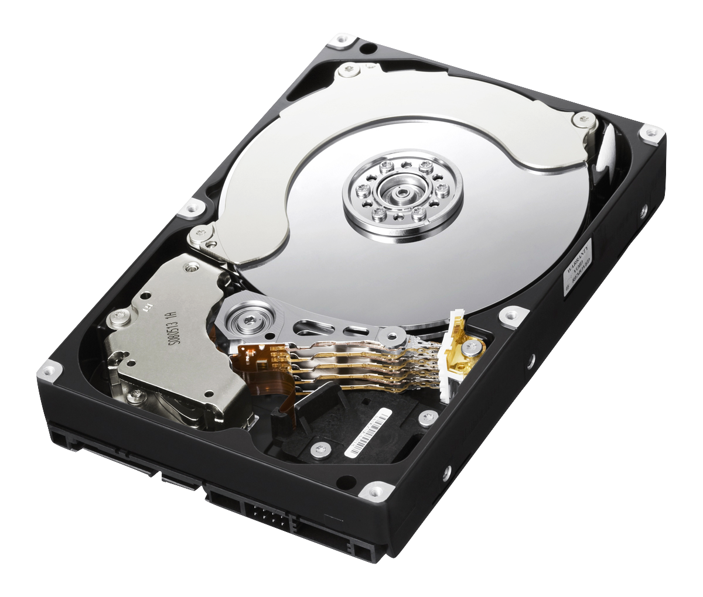

Es el dispositivo en el cual el usuario puede guardar toda la información de de su computadora.

Tipo de unidad: Hay dos tipos principales de unidades de almacenamiento, los discos duros y los discos sólidos, los primeros tienen ya algunos años que se utilizan,
funcionan con discos magnéticos que son leídos por un cabezal, por lo que son mas lentos que los discos en estado sólido, ya que estos funcionan como una memoria flash.
Tipo de conexión: Existen dos tipos de conexiones IDE y SATA, aunque actualmente el IDE está casi obsoleto, ya que el SATA ofrece mayores ventajas.
Velocidad: Los discos duros tienen un parámetro de velocidad de revoluciones por minuto, ya que funcionan me manera mecánica,
mientras que en los SSD se acostumbra medir la taza de transferencia.